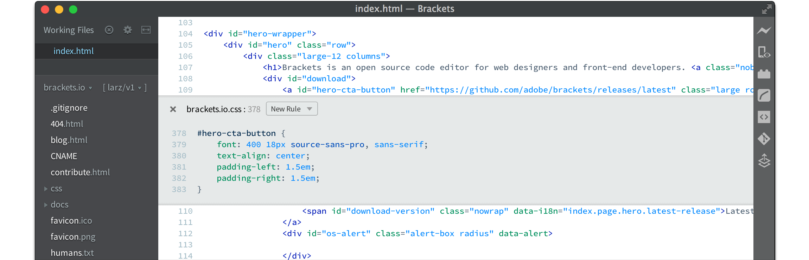
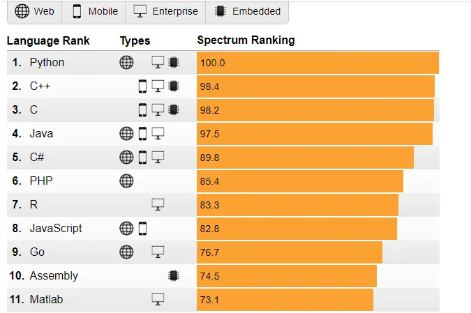

BAŞLAYALIM
Alt kısımda senin için 6 başlık sıraladık.
Web Geliştirme
Web geliştirme, internet üzerindeki içerikleri tasarlamak, oluşturmak ve yönetmek için kullanılan yazılım ve teknolojilerin bütünüdür.
DetaylarSiber Güvenlik
Siber güvenlik, bilgisayar sistemlerini, ağları ve verileri korumak için kullanılan teknolojilerin ve stratejilerin bütünüdür.
DetaylarYapay Zeka
Yapay zeka programlama, bilgisayar sistemlerine kendi kendine öğrenme ve problem çözme yetenekleri kazandırmak için kullanılan yazılım ve tekniklerin bütünüdür.
DetaylarMobil Uygulamalar
Mobil uygulama programlama, akıllı telefonlar ve tabletler gibi mobil cihazlar için yazılım geliştirme sürecini ve tekniklerini içeren disiplindir.
DetaylarOyun Geliştirme
Oyun geliştirme, bilgisayar oyunları ve dijital eğlence uygulamaları için yazılım, grafik tasarımı ve kullanıcı deneyimi geliştirme süreçlerini içeren disiplindir.
DetaylarRobotik Kodlama
Robotik kodlama, robotların hareket etmesi, algılaması ve görevleri yerine getirmesi için yazılım ve programlama tekniklerini kullanarak çalışmalar yapan disiplindir.
DetaylarWeb Geliştirme
Web Geliştirme alanı temel olarak ikiye ayrılır ; web tasarımı (frontend) ve web programlama (backend). Her ikisi ile uğraşanlara full-stack web geliştirici denir.
Peki Bir Web Geliştirici Neler Öğrenmelidir ?
Frontend (Tasarım) alanında, Html, Css ve Javascript konularını bilmek gerekiyor. Tasarım konusunda hazır Css kütüphanelerinden yararlanarak işlerimi daha kolaylaştıracaktır. Css kütüphanelerinden en popülerleri Bootstrap, Material kütüphaneleridir.
Bu arada sadece Html ve Css ile tasarım yapılabilir. Ancak web siteye dinamiklik(hareket) kazandıran Javascript olduğu için Frontend son zamanlarda popüler hale geldi. Javascript kütüphaneleri ise Jquery, Angular, React, VueJs, KnockoutJs vb.
Backend (Programlama) alanında, Bu alanda kullanılan programlama dilleri; Asp.net, Php , Java , Python , NodeJs dir.
Web Geliştirmek için kullanılan araçlar ve programlar hangileridir ?
Integrated Development Environment-Tümleşik Geliştirme Ortamı(IDE), yazılımcıların daha kolay bir şekilde uygulamalarını kodlayabilmesi için geliştirilen arayüzdür.
1.Brackets

2.Visual Studio Code
2.Atom Editörü
Benim tercihim VS Code veya Brackers editörü olucaktır.
~WEB GELİŞTİRMEYE GEÇMEDEN ÖNCE BAZI BİLGİLER~
HTML , CSS ve JavaScript World Wide Web’in temel teknolojilerinden biri olan programlama dilleridir. İki tür web sitesi vardır. Statik ve Dinamik Web sitesi.
Statik Web Site Nedir?
Statik web siteleri, genellikle belli bir sayfa düzeni olan sabit sayıda sayfadan oluşur. İçerik tam anlamıyla statiktir/durağandır ve kullanıcı eylemlerine bağlı olarak değişmez. Not Defteri gibi basit metin düzenleyicilerde HTML ve CSS ile oluşturulur.
Dinamik Web Site Nedir?
Kullanıcıların sayfada listelenen bilgilerle etkileşim kurmasına olanak tanır. Dinamik web tasarım, HTML ve CSS ek olarak JavaScript, PHP veya ASP gibi sunucu tarafı kodlama dillerini kullanır.
ARALARINDAKİ FARK NEDİR ?
Statik web sitelerinin temel amacı bilgilendirici olmaktır; dinamik web siteleri ise etkileşim ve işlevsellik ile karakterize edilir.
Siber Güvenlik
Siber güvenlik nedir?
Siber güvenlik; bilgisayarları, ağları, yazılım uygulamalarını, kritik sistemleri ve verileri olası dijital tehditlerden koruma uygulamasıdır. Kuruluşlar müşteri güvenini sürdürmek ve düzenleyici mevzuat uygunluğunu karşılamak için verileri güvenceye alma sorumluluğu taşır. Hassas verileri yetkisiz erişimden korumak ve bunun yanı sıra iş operasyonlarında istenmeyen ağ etkinliği nedeniyle kesinti oluşmasını önlemek için siber güvenlik önlemleri ve araçları kullanırlar. Kuruluşlar; çalışanlar, süreçler ve teknolojiler arasında dijital savunma sürecini düzene koyarak siber güvenliği uygularlar.
İhlalleri önleme veya maliyetlerini azaltma
Siber güvenlik stratejileri uygulayan kuruluşlar; işletme itibarını, finansal dayanaklarını, işletme operasyonlarını ve müşteri güvenini etkileyebilecek istenmeyen siber saldırı sonuçlarını en aza indirger. Örneğin, şirketler olası sızma durumlarını içeren ve işletme operasyonu kesintilerini en aza indirgeyen olağanüstü durum kurtarma planları hayata geçirir.
Mevzuata uygunluğu sürdürme
Belirli sektörlerde ve bölgelerdeki işletmeler, hassas verileri olası siber risklere karşı korumak için düzenleyici mevzuat gereksinimlerine uyum sağlamalıdır. Örneğin, Avrupa'da faaliyet gösteren şirketlerin, kuruluşların veri gizliliğini sağlayan uygun siber güvenlik önlemleri almasını öngören Genel Veri Koruma Yönetmeliği'ne (GDPR) uyum sağlaması gerekmektedir.
Gelişen siber tehditlerin etkisini hafifletin
Siber saldırılar değişen teknolojilerle birlikte gelişmektedir. Suçlular, yetkisiz sistem erişimi için yeni araçlar kullanmakta ve yeni stratejiler üretmektedir. Kuruluşlar, bu yeni ve gittikçe gelişen dijital saldırı teknolojileri ve araçlarıyla baş etmek için siber güvenlik önlemleri uygular ve bunları yükseltir.
Siber güvenliğin savunma sağlamaya çalıştığı saldırı türleri nelerdir?
Siber güvenlik uzmanları, bilgisayar sistemlerine farklı yollarla sızan yeni tehditleri kontrol altında tutmak ve etkisini hafifletmek için çabalamaktadır. Yaygın siber tehditlere ilişkin bazı örnekler aşağıda verilmiştir.
Malware
Malware terimi kötü amaçlı yazılım demektir. Üçüncü tarafların hassas bilgilere yetkisiz erişim elde etmesini veya kritik bir altyapının normal çalışmasını kesintiye uğratmasını sağlamak için tasarlanmış bir dizi yazılım programını içerir. Kötü amaçlı yazılımın yaygın örnekleri truva atları, casus yazılım ve virüslerdir.
Fidye yazılımı
Malware terimi kötü amaçlı yazılım demektir. Üçüncü tarafların hassas bilgilere yetkisiz erişim elde etmesini veya kritik bir altyapının normal çalışmasını kesintiye uğratmasını sağlamak için tasarlanmış bir dizi yazılım programını içerir. Kötü amaçlı yazılımın yaygın örnekleri truva atları, casus yazılım ve virüslerdir.
Ortadaki adam saldırısı
Ortadaki adam saldırısı, dışarıdaki bir tarafın veri alışverişi sırasında bir ağ üzerinden yetkisiz erişim sağlama girişimini içerir. Bu gibi saldırılar, finansal veriler gibi hassas bilgilere ilişkin güvenlik risklerini artırır.
Kimlik hırsızlığı
Kimlik hırsızlığı, kimliği tanımlayabilecek bilgileri ifşa etmeleri için kullanıcıları kandırmaya yönelik sosyal mühendislik tekniklerini kullanan bir siber tehdittir. Örneğin, siber saldırganlar kullanıcıların sahte bir ödeme web sayfasına tıklayarak bu sayfaya kredi kartı verilerini girmelerine neden olan e-postalar gönderirler. Kimlik hırsızlıkları aynı zamanda şirket cihazlarına kötü amaçlı yazılım yükleyen zararlı eklerin indirilmesiyle de sonuçlanabilir.
DDoS
Dağıtılmış hizmet reddi saldırısı (DDoS), yüksek hacimde sahte istek göndererek bir sunucuya aşırı yüklenmeyi içeren koordinasyonlu bir çabadır. Bu gibi etkinlikler, normal kullanıcıların hedeflenen sunucuya bağlanmasını veya bu sunuculara erişmesini engeller.
Ortadaki adam saldırısı
Ortadaki adam saldırısı, dışarıdaki bir tarafın veri alışverişi sırasında bir ağ üzerinden yetkisiz erişim sağlama girişimini içerir. Bu gibi saldırılar, finansal veriler gibi hassas bilgilere ilişkin güvenlik risklerini artırır.
Siber güvenlik nasıl çalışır?
Kuruluşlar, siber güvenlik stratejilerini sürece siber güvenlik uzmanları dahil ederek uygular. Bu uzmanlar mevcut bilgi işlem sistemlerinin, ağların, veri depolamanın, uygulamaların ve diğer bağlı cihazların güvenlik risklerini değerlendirir. Ardından, siber güvenlik uzmanları kapsamlı bir siber güvenlik çerçevesi oluşturur ve koruyucu önlemleri kuruluşta hayata geçirir.
Başarılı bir siber güvenlik programı, çalışanları en iyi güvenlik uygulamaları konusunda eğitmeyi ve mevcut BT altyapısı için otomatikleştirilmiş siber savunma teknolojilerinden faydalanmayı içerir. Bu bileşenler, tüm veri erişim noktalarında olası tehditlere karşı birden çok katmanlı bir koruma oluşturmak için birlikte işlev gösterir. Bunlar riskleri saptar, kimlikleri, altyapıyı ve verileri korur, anormallikleri ve etkinlikleri algılar, temel nedeni analiz ederek buna yanıt verir ve bir olay sonrasında kurtarma gerçekleştirir.
Siber güvenlik türleri nelerdir?
Güçlü bir siber güvenlik yaklaşımı, bir kuruluş dahilinde önem verilen aşağıdaki hususları ele alır.
Kritik altyapı siber güvenliği
Kritik altyapı; enerji, iletişim ve ulaşım gibi toplum için önemli olan dijital sistemlere atıfta bulunur. Kesinti veya veri kaybı toplumun dengesini bozacağından, bu alanlardaki kuruluşlar sistematik bir siber güvenlik yaklaşımına ihtiyaç duyar.
Ağ güvenliği
Ağ güvenliği, bir ağa bağlı bilgisayar ve cihazlara yönelik siber güvenlik korumasıdır. BT ekipleri, kullanıcı erişimini düzenlemek ve belirli dijital varlıklar için izinleri yönetmek amacıyla güvenlik duvarları ve ağ erişimi denetimi gibi ağ güvenliği teknolojilerini kullanırlar.
Bulut güvenliği
Bulut güvenliği, bulutta çalışan verileri ve uygulamaları korumak için bir kuruluşun aldığı önlemleri tanımlar. Bu, ölçeklenebilir bir ortamda müşteri güvenini güçlendirmek, hata toleranslı operasyonlar sağlamak ve veri gizliliği düzenlemelerine uyum sağlamak için önemlidir. Güçlü bir bulut güvenliği stratejisi, bulut sağlayıcısı ile kuruluş arasında paylaşılan sorumluluk içerir.
IoT güvenliği
Nesnelerin İnterneti (IoT) terimi, internet üzerinde uzaktan çalışan elektronik cihazlara atıfta bulunur. Örneğin, akıllı telefonunuza düzenli aralıklarla güncellemeler gönderen bir akıllı alarm bir IoT cihazı olarak değerlendirilir. Bu IoT cihazları, sürekli bağlantı ve gizli yazılım hataları nedeniyle ek bir güvenlik riski katmanına neden olur. Bu nedenle, farklı IoT cihazlarının olası risklerini değerlendirip hafifletmek için ağ altyapısına güvenlik politikaları dahil etmek temel önem taşır.
Veri güvenliği
Veri güvenliği, taşınan ve bekleyen verileri güçlü bir depolama sistemi ve güvenli bir veri aktarımıyla korur. Geliştiriciler, olası veri ihlallerine karşı operasyonel dayanıklılık sağlamak için şifreleme ve yalıtılmış yedekler gibi koruyucu önlemleri kullanır. Bazı durumlarda, geliştiriciler depolama gizliliğine ve operatör erişimini kısıtlamaya yönelik olarak AWS Nitro Sistemi'ni kullanır.
Uygulama güvenliği
Uygulama güvenliği; tasarım, geliştirme ve test aşamaları sırasında bir uygulamanın korumasını yetkisiz manipülasyona karşı güçlendirmeye yönelik koordinasyonlu bir çabadır. Yazılım programcıları, güvenlik risklerini artırabilecek hataları önlemek için güvenli kodlar yazarlar.
Uç nokta güvenliği
Uç nokta güvenliği, kullanıcılar bir kuruluşun ağına uzaktan eriştiğinde ortaya çıkan güvenlik risklerini ele alır. Uç nokta güvenliği koruması, cihazlardaki dosyaları tarar ve tehlike algıladığında bunların etkisini hafifletir.
Olağanüstü durum kurtarma ve iş sürekliliği planlaması
Bu, bir kuruluşun siber güvenlik olaylarına hızlıca yanıt verirken çok az veya sıfır kesintiyle çalışmaya devam etmesine olanak tanıyan acil durum planlarını tanımlar. Bunlar, veri kayıplarına karşı olumlu yanıtlar vermek üzere veri kurtarma politikaları hayata geçirirler.
Son kullanıcı eğitimi
Bir kuruluş dahilindeki çalışanlar, siber güvenlik stratejilerinin başarısını temin etmede hayati bir role sahiptir. Eğitim; çalışanların, şüpheli e-postaları silme ve şirket aygıtlarına bilinmeyen USB cihazlarını takmaktan kaçınma gibi en iyi güvenlik uygulamalarıyla eğitilmesi bakımından kilit önem taşır.
Modern siber güvenlik teknolojileri nelerdir?
Bunlar, kuruluşların verilerini güvenceye almasına yardımcı olan modern siber güvenlik teknolojileridir.
Davranışsal analiz
Davranışsal analiz, şüpheli etkinlikleri ve anormal düzenleri tespit etmek üzere cihazlardan ve ağlardan yapılan veri aktarımını izler. Örneğin, BT güvenlik ekibine veri aktarımındaki ani artışlar veya belirli cihazlara indirilen şüpheli dosyalar konusunda uyarı gönderilir.
Sızma algılama sistemi
Kuruluşlar, bir siber saldırıyı saptamak ve hızlıca yanıt vermek için sızma algılama sistemlerini kullanır. Modern güvenlik çözümleri, kuruluşun bilgi işlem altyapısındaki durağan tehditleri ortaya çıkarmak için makine öğrenimini ve veri analizini kullanır. Sızma savunma mekanizması ayrıca bir olay durumunda, olayın kaynağını keşfetmesi için güvenlik ekibine yardımcı olan bir veri izi toplar.
Bulut şifreleme
Bulut şifreleme, verileri bulut veritabanlarında depolamadan önce bunları karıştırır. Bu, yetkisiz tarafların verileri olası ihlallerde bulunacak şekilde kötüye kullanmasını önler. Kuruluşlar, AWS iş yüklerindeki veri şifrelemeyi kontrol altına almak için AWS Anahtar Yönetimi Hizmeti'ni kullanır.
Yapay Zeka
1. Yapay zeka nedir?
Yapay zeka, dar zeka ve yapay genel zeka olarak ikiye ayrılmaktadır.
Yapay genel zeka; biyolojik olarak insan sinir sisteminden esinlenerek matematiksel olarak tasarlanan görsel algılama, konuşma ve ses tanıma, hareket, muhasebe ve muhakeme yeteneğine sahip, kendi kendine öğrenme işlemlerini sürdürebilen yazılımsal ve donanımsal sistemler bütünüdür.
Yapay dar zeka ise belirli bir problemin çözümü için geliştirilen ve veriden öğrenen dar kapsamlı yapay zeka sistemleridir.
2. Yapay zeka öğrenmek zor mu? Kendi kendime öğrenebilir miyim?
Hayır, zor değil. Ancak yapay zeka, ciddi anlamda zaman ayırıp çalışmayı gerektiren bir alandır. Üniversitelerde, bilimsel konferanslarda, online eğitim platformlarında, bloglarda ve Youtube’da yer alan
- -dokümanları,
- -videoları,
- -açık kaynaklı uygulamaları,
- -akademik makaleleri
takip ederek seviyenize uygun şekilde kendi kendinize de öğrenmeniz mümkündür.
3. Yapay zeka algoritmalarını ve matematiğini nereden öğrenebilirim?
Yapay zekanın temelini öğrenmek önemlidir. Aksi halde geliştirici değil uyarlayıcı olursunuz. Bu yüzden yapay sinir ağları (artificial neural networks), makine öğrenmesi (machine learning), işlemsel zeka (computational intelligence), derin öğrenme (deep learning) gibi temel dersleri mutlaka takip etmelisiniz
4. Yapay zeka için hangi programlama dillerini tercih etmeliyim?
- ·Python (%57),
- ·C/C++ (%44),
- ·Java (%41),
- ·R (%37), ve
- ·JavaScript (%28) dir.
Özellikle Python birçok derin öğrenme kütüphanesinin arka planında kullanılmasından dolayı en çok tercih edilen programlama dili iken veri görselleştirme içinse en tercih edilen dil R’dır. Python programlama dilinin bir diğer avantajı da hem akademik hem ticari uygulamalar için kullanılabilmesidir.
IEEE Spectrum’un 2018 için hazırladığı programlama dillerinin kullanımıyla ilgili araştırmanın sonuçları da şöyle:

5. Makine öğrenmesi ve Optimizasyon için kullanılabilecek diğer alternatifler nelerdir?
Elbette sadece 4. sorudaki programlama dilleri kullanılmamaktadır. En popüler 5 dilden sonra tercih edilen diğer ortamlar aşağıdaki gibidir:
- ·Scala
- ·Julia
- ·Ruby
- ·Octave
- ·MatLab
- ·SAS
6. Yapay zeka uygulaması geliştirmek için hangi araçları kullanmalıyım?
Kendi Bilgisayarınızda:
Kullandığınız programlama diline göre uygun IDE (Integrated Development Environment-Tümleşik Geliştirme Ortamı) seçimi yapmalısınız. Örneğin en çok kullanılan Python dilinde çalışıyorsanız Anaconda (Package Management Tool-Paket Yönetim Servisi) ve/veya Visual Studio Code, Java için Eclipse tercih edebilirsiniz.
Ücretsiz bulut ortamında:
Microsoft Azure Notebook (sadece CPU) ve Google Colab (GPU desteği var) herhangi bir kurulum gerektirmeksizin uygulamanızı geliştirmenizi sağlamaktadır.
7. Hangi problem için hangi modelleri tercih etmeliyim/öğrenmeliyim?
Bunun için daha önce benzer problemlere nasıl yöntemler uygulanmış incelemeniz gerekir. Literatür taraması yapmanız şart ancak Andrew Ng’in Geoffrey Hinton ile yapmış olduğu “Derin Öğrenmenin Kahramanları” isimli röportajda Hinton’ın da söylediği gibi literatürde boğulmadan uygulamaları inceleyip yolunuza bakmalısınız. Teoriye hakim olmanız uygun modeli tasarlayabilmeniz için size gerekli bilgi birikimini sağlayacaktır. Çevrenizle fikir alışverişi yapmayı unutmayın!
- ·CNN(Convolutional Neural Networks-Evrişimli Sinir Ağları): Nesne tanıma ve takip etme, stil transferi, kanser tespiti vb.
- ·LSTM(Long Short Term Memory-Uzun-Kısa Süreli Bellek): Doğal dil işleme, çeviri, chatbot, finans uygulamaları vb.
- ·GAN(Generative Adversarial Networks-Çekişmeli Üretici Ağlar): Sentetik veri üretme, sahte yüz üretme, stil transferi vb.
- ·RL(Reinforcement Learning-Pekiştirmeli Öğrenme): Kendi kendine ve az veriyle öğrenen yapay zeka sistemleri vb.
8. Yapay zeka çalışırken neden ve ne kadar veriye ihtiyaç var?
Yapay zeka veriden öğrenen ve veriye ihtiyaç duyan bir araştırma alanıdır. Verinin hacmi, çeşitliliği ve sayıca fazlalığı büyüklüğünü gösteren 3 temel kavramdır. Verinin üretim hızı da bugün yapay zeka uygulamalarının iyileşmesi ve gerçekçi sonuçlar üretmesine destek ve itici bir güçtür.
9. Yapay zeka algoritmalarının eksiklikleri ve fazlalıkları nelerdir?
Özellikle derin öğrenme özelinde konuşacak olursak; nesne tanıma, yüz tanıma, anomali tespiti, doğal dil işleme, çeviri vb. problem sahalarında çok fazla veri ihtiyacı bulunmaktadır. Veriye çok fazla ihtiyaç olmayan, sıfırdan kendi kendine öğrenmeye çalışan modellerle (Reinforcement Learning vb.) ise henüz bilgisayar oyunları dışında gündelik problemlere çözümler bulunamamaktadır. Bu süreçte, gelişimine yapay zeka alt dallarında eksiklikler olacaktır, bu da yeni çalışma alanları yaratacaktır.
Mobil Uygulamalar
Günümüzün olmazsa olmazlarından biri olan Mobil Uygulamalar, hayatımızın her alanında, yaşamımızı kolaylaştırıyor. Mobil Uygulama kullanımı günden günde hızlı bir şekilde artıyor. Farklı firmalar kullanıcılarının, müşterilerinin veya çalışanlarının hayatlarını kolaylaştırabilmek için mobil uygulamalar öne sürüyor.
Hedef Kitlenizi Belirleyin
Mobil uygulama geliştirirken sorulması gereken soruların başında mobil uygulamanın kimlere hitap edeceği ve ağırlıklı olarak kimler tarafından kullanılacağıdır. Mobil uygulama geliştirirken hedef kitlenizin ilgisini çekecek detayları atlamayın.
Basitlik ve Kolaylık
Bilgiye kolayca ulaştığımız günlerdeyiz. Bunu göz önüne alarak karmaşık ve sıkıcı süreçleri olan uygulamalardansa basit ve kolay olana odaklanmak ve kullanıcı dostu bir mobil uygulama geliştirmek, kullanıcıların uygulama ile etkileşimini arttırmada büyük önem taşır.
Farklı İşletim Sistemlerine Göre Tasarlayın
Farklı işletim sistemleri kullanan kullanıcılar hedef kitleniz belirlendiğinde her platforma uyum sağlayabilen bir uygulama geliştirmek de zorunluluk haline gelmekte. Android ve IOS gibi işletim sistemlerine uygun ve sorunsuz çalışan bir uygulama çok daha fazla kişiye hitap etmektedir.
Uyumluluk
Mobil uygulamanızın işletim sistemi çeşitliliğinin yanında masaüstü, tablet ve akıllı telefon gibi platformlarda da problemsiz bir şekilde çalışıp çalışmadığını kontrol edin. Mobil uygulamanızın birden fazla cihazdan ulaşılabilirliğini ve farklı cihazlardan girildiğinde uygulama içindeki görsel, yazı gibi etkenlerin ekran genişliğine göre yeniden şekillenmesini sağlayın.
İyi Tasarım
İlgi çekici ve canlı tasarım ögeleri ile mobil uygulamanızı çok daha çekici hale getirebilirsiniz. Farklı tasarım ögelerini bir araya getirerek ve renk uyumları ile uygulamanızı ön plana çıkarmayı deneyin.
Bir hedefe odaklanın
Mobil uygulama tasarlarken ekranda aynı anda pek çok seçeneğin olması karışıklığa neden olur. Bu sebeple uygulamanızı her sayfada tek hedefe odaklayarak minimalist davranmanız kullanıcılarınızın kafa karışıklığını önler.
Grid kullanımı önemli
Mobil uygulamanızı grid yapı ile tasarlamak birbirleri ile orantılı bir deneyim sağladığı için zihindeki görsel bağlantıyı arttırarak rahat bir kullanım sunar.
Eğer siz de yazılım bilgisine sahipseniz ve Android telefonlar için mobil uygulama geliştirmek istiyorsanız bu aşamaları izlemelisiniz:
Öncelikle Android uygulama geliştirmeye başlamak için mobil uygulama geliştirme programları ile işe başlamanız gerekmektedir. Android telefonlar için yazılım yapabileceğiniz birçok platform bulunmaktadır.
Eclipse ve AndroidStudio
Android bir yazılım için mobil uygulama geliştirebilecek entegre geliştirme ortamı (IDE) olan Eclipse, XML ve Java dosyalarınızı düzenlemeye alabilir ve uygulamanıza ait olan kanalları oluşturmaya başlayabilirsiniz. Eclipse’i Google’dan edinebilir, uygulamanızı geliştirebilir ve hatta uygulamanızı bir üst sürüme taşıyabilirsiniz.
AndroidStudio, Eclipse’e göre daha hızlı hizmet veren bir alt yapıya sahiptir ancak Eclipse’e göre daha fazla hata çıkarması söz konusudur. Bu yönden genel olarak, daha hızlı bir şekilde geleceğe ilerlemek isteyenlerin tercih ettikleri platformun AndroidStudio olduğunu söyleyebilmekteyiz.
Android SDK Aracılığı ile ADB
ADB’nin amacı uygulama geliştiricilerini asiste etmektir. ADB aracılığı ile Android cihazların yazılımları üzerinde değişiklik gerçekleştirebilir ve uygulama yüklemesi yapabilirsiniz.
Android Developer Guidelines
Bir rehber görevi gören Android Developer Guidelines resmi bir yazılım olarak uygulama geliştiricilere yardımcı olmakta ve ipuçları vermektedir. Temel olarak IDE ve ADB bilgisine sahip olmak yetecektir.
Android Design Guidelines
Android yazılım işi için mucizevi nitelikte olan bir mobil uygulama geliştirme platformları arasında estetik ve görsel bilginizi konuşturmaya başlayacağınız platform Android Design Guideliness’tir. Temel animasyonlar, sayfalar ve daha birçok içeriği oluştururken görsel güçten faydalanmak için bu rehberi kullanmak oldukça faydalı olacaktır.
GitHub ve BitBucket
Android uygulamaları çok sayıda dosya ve klasörden meydana gelmektedir ve her birinin düzeni, varlığı, ismi, numarası gibi ince detayları yazılımın doğru işlemesi için çok büyük önem taşımaktadır.
IOS’dan bahsedecek olursak:
JS ve HTML5 kullanarak ios’ta mobil uygulama geliştirmek mümkün. Ancak HTML5 ve JS’yi kullanarak mobil uygulama geliştirmek mantıklı görünüyor olabilir fakat bunu yapmak için framework kullanmamız gerekmekte. Frameworkten kısaca bahsedecek olursak, kullanılmaya hazır kod parçalarının birleşmesine denir. Bu frameworkler, tıpkı native uygulamalardaki gibi cihazın donanımına erişebilme, tasarım bütünlüğü oluşturabilme vb. gibi mobil uygulama ihtiyaçlarını karşılayabilmeyi sağlıyor. Bunlar olmaksızın bir uygulama geliştirmek oldukça zor ve kullanışsız olacaktır.
JS, CSS3 ve HTML5 yazılım dillerini kullanarak olağanüstü efektler ve cihazın neredeyse tümüne erişim imkanı sağlanması sayesinde birçok işlem içeren uygulamalar yapılabilmektedir.
Oyun Geliştirme
Nasıl Oyun Geliştirici Olunur?
Teknolojinin kapsamlı bir şekilde gelişmesi ile birlikte alışılagelmiş pek çok konuda değişikliklerin yaşanması kaçınılmaz hale geliyor. Teknolojinin etkilediği konulardan biri de hiç şüphesiz oyun kültürü oluyor. Oyuncuların keyifli ve eğlenceli dakikalar geçirmesini sağlayan bilgisayar oyunları, aynı zamanda oyuncunun etkileşimli bir oyun deneyimine sahip olmasını sağlıyor.
Dikkat çekici grafikleri ve teknolojileri ile öne çıkan oyunlar, mobil uygulama ve oyun geliştiricisi olarak tanımlanan kişiler tarafından tasarlanıyor. Oyun geliştiricileri, oyuncuların farklı istekleri ve ihtiyaçları doğrultusunda çeşitli konseptlere sahip olan oyunları oluşturuyor ve kullanıcıların beğenisine sunuyor. Farklı projelere imza atan oyun geliştiricileri, tasarım, yazılım ve daha pek çok konuda uzmanlık sahibi oluyor.
Modern dünyanın gözde mesleklerinden biri olan oyun geliştiriciliği, geniş bir iş alanı sunması ile de dikkat çekiyor. Oyun geliştiricileri yarı zamanlı ya da tam zamanlı olarak oyun stüdyolarında, oyun şirketlerinde ya da oyun geliştirme ekiplerinde görev alma fırsatına sahip oluyor. Oyun geliştiricisi olarak çalışan kişiler, oyun geliştirme çalışmasının ‘’yazılım’’ kısmında görev alıyor. Bu noktada geliştirilen oyunun türüne ve konseptine göre, oyun geliştiricisinin farklı uzmanlık alanlarına sahip olması gerekebiliyor. Game Development olarak bilinen ve sektörde görev almak isteyen kişilerin birtakım niteliklere sahip olması gerekiyor. Eğer siz de oyun geliştirici olmak istiyor ve bu alanda uzmanlık sahibi olmak istiyorsanız; içeriğimizden kapsamlı bir şekilde bilgi sahibi olabilirsiniz.
Oyun Geliştirici Olmanın Yolları
● İlgili Alanlarda Lisans Eğitimi Almak: Oyun geliştiricisi olarak mesleğini icra etmek istiyor ve bu alanda kendinizi geliştirmek istiyorsanız öncelikle eğitiminizi lisans derecesi ile tamamlamanızda fayda var. Oyun geliştirici üniversite bölümleri genellikle yazılım ve bilgisayar bilimi temelli oluyor. İlgili alanlarda lisans diplomasına sahip olduğunuz takdirde her zaman bir adım önde olabilir, teorik bilgilerinizi pratik bilgilerinizle harmanlayarak iş hayatında faaliyetlerini sürdürebilirsiniz. Ayrıca lisans eğitimi oldukça faydalı olsa da farklı eğitimler alarak ve kendinizi geliştirerek yazılım sektöründe yer alabilirsiniz.
● Kod Yazımı: Oyun geliştiriciliği alanında kod yazma işlemi oldukça önemli bir yere sahip. Kod yazımı ile oyun geliştiricileri ilgili oyunu tasarlıyor ve şekillendiriyor. Kod yazımının yanı sıra Lua, Python, C, C++ ve daha pek çok farklı programlama dili hakkında da bilgi sahibi olmalı, yazılım mühendisliği alanındaki bilgi ve becerilerinizi geliştirmelisiniz.
● C++ Yazılım Dilinin Önemi: Dünyada en çok bilinen programlama dillerinden biri olan C++ yazılım dili, oyun geliştiriciliği alanında sağlam bir temel oluşturabilmeniz açısından oldukça önemli bir yere sahip. Pek çok farklı alanda kullanılan C++ yazılım dilini mutlaka öğrenmeli, güncel kod ve basit dil örneklerini dikkatli bir şekilde incelemelisiniz.
Unity Aracı: Oldukça güçlü bir geliştirme aracı olan Unity, masaüstü ve mobil oyunların ve gerçek zamanlı simülasyonların geliştirilmesinde sıklıkla tercih ediliyor. Siz de Unity konusunda bilgi sahibi olarak oyun geliştiriciliği alanında yol katedebilirsiniz.
● Unreal Engine: Gerçek zamanlı geliştirme araçlarını benimsiyor oluşu ile dikkat çeken Unreal Engine, mutlaka bilgi sahibi olmanız gereken hususlar arasında yer alıyor.
Oyun Geliştirici Hangi Özelliklere Sahip Olmalı?
İyi bir oyun geliştirici, oyunun dikkat çekiciliğini artırmalı ve geliştirdiği oyunun keyif verici bir deneyime dönüşmesini sağlamalı. İşte tam da bu noktada oyun geliştiricinin birtakım özelliklere sahip olması gerekiyor. Siz de ‘’Game Developer nasıl olunur?’’ sorusunun cevabını merak ediyorsanız aşağıdaki maddelere göz atabilirsiniz.
● Oyun Sektörüne Hakim Olmalısınız: Başarılı bir oyun geliştirici olmak istiyorsanız oyun sektörüne hakim olmalı, piyasada bulunan her türlü oyunu ayrıntılı bir şekilde incelemelisiniz. Aynı zamanda kullanıcılar tarafından daha çok ilgi gören oyun türlerini belirlemeli, bu oyunların neden tercih edildiği hakkında rapor oluşturabilme kabiliyetine sahip olmalısınız.
● Oyunları Tasarımsal Açıdan Gözlemleyebilmelisiniz: Üzerinde çalıştığınız oyunu tasarım özellikleri açısından dikkatli bir şekilde incelemelisiniz. Böylelikle görsel hafızanızı da geliştirebilir, oyun geliştiriciliği alanında önemli işlere imza atabilirsiniz.
● Kod Yazımı Alanında Kendinizi Geliştirmelisiniz: Eğer bir oyunu baştan yaratmak ve piyasaya sunmak istiyorsanız mutlaka kod yazımı konusunda bilgi sahibi olmanız gerekir. Kod yazımı alanında teknik bilgiye sahip olduğunuz takdirde; tasarladığınız oyunu hayata geçirebilir, somut bir başarı elde edebilirsiniz.
● Detaylara Hakim Olmalısınız: Oyun geliştirici olarak mesleğini icra ederken teknik ve donanımsal detaylara hakim olmalısınız. Aynı zamanda program yazılım dili ve motoruna da hakim olabilmeniz önem arz ediyor.
● Takım Çalışmasına Yatkın Olmalısınız: Oyun geliştirme süreci, bilgi ve beceri sahibi bir ekip tarafından kreatif bir şekilde sürdürülür. Bu noktada ekipte yer alan kişiler, geliştirilen oyunu farklı perspektiflerden inceler ve oyunu daha dikkat çekici bir hale getirmenin yollarını arar. Eğer siz de oyun geliştirici olmak istiyorsanız ekip çalışmasına yatkın, çeşitli bakış açıları ve disiplinler kazanmaya açık olmalısınız. Ekip çalışmasına yatkın olmakla beraber; sistematik ve modüler bir şekilde düşünebilmeli, oyun dünyasındaki gelişmeleri aktif bir şekilde takip edebilmeli ve proje teslim tarihine uyabilmelisiniz.
Oyun Geliştirici Hangi Pozisyonlarda Görev Alabilir?
Oyun geliştiriciliği, modern dünyada en çok ilgi gören pozisyonlar arasında yer alıyor Teknolojinin gelişmesi ve oyun geliştiriciliğinin artması ile bu alanda çalışacak kişilere ihtiyaç duyuluyor. Oyun geliştirici olarak çeşitli alanlarda görev alabileceğiniz pek çok pozisyon bulunuyor. Oyun geliştirici iş ilanlarında yer alan pozisyonlar şu şekilde sıralanabilir;
● Oyun Tasarımcısı: Video oyunlarının dünyalarını ve kavramlarını yaratma konusunda uzman olarak mesleğini icra eden oyun tasarımcıları; oyunun türü, hikayesi, ortamı, sistemi, karakterleri ve kullanıcı deneyimi tasarımları ile ilgilenir. Oyun tasarımcısı olarak çalışırken oyunun hikayesini yazmalı ve oyun örgüsünü belirlemelisiniz. Aynı zamanda oyun yönlendirici hedefleri de belirlemeli, oyunun özel ihtiyaçlarını karşılamalısınız.
● Sistem Tasarımcısı: Sistem tasarımcısı, ilgili oyunun içerisindeki seviyeleri dikkatli bir şekilde yaratır ve mizanpaj haritası çıkarır.
● Oyun Programcısı: Çoğunlukla bilgisayar mühendislerinin görev aldığı bir pozisyon olan oyun programcılığı, ilgili oyunun hayata geçirilmesi ile ilgili evreleri kapsar. Oyun programcısı olarak mesleğinizi icra ederken; kullanıcı arabirimi, araçlar, ağ, taşıma, komut dosyası ve yapay zeka gibi pek çok farklı alanda uzmanlaşma imkânına sahip olabilirsiniz.
● Yapay Zeka Programcısı: Yapay zeka programcısı bir oyunun temelini, yani ‘’beynini’’ oluşturur. Oyun içerisinde belirlenen karakterlerin ve ögelerin davranışlarını belirlemek amacı ile çeşitli algoritmalar oluştururlar.
● Oyun Mühendisi: Oyun geliştirici bölümü olarak tanımlanan çeşitli bölümlerden lisans derecesi ile mezun olan kişiler, oyun mühendisi olarak oyun sektöründe faaliyetlerini sürdürür. Oyun mühendisleri, yazılımı ilgili oyunun gereksinimlerine göre uyarlar. Kod yazımı konusunda da uzman olan oyun mühendisleri, ilgili oyuna özgü özel yazılımlar oluşturur.
● Oyun Sanatçısı: Oyun sanatçıları çoğunlukla video oyunları geliştirmek amacı ile faaliyetlerini sürdürür. Video oyunları için 2D ve 3D sanat oluşturabilen oyun artistleri, oyun ile bağlantısı olan tüm görsel ögeler üzerinde çalışmalarını sürdürür.
● 3D Karakter Sanatçısı: Adından da anlaşıldığı üzere 3D karakter sanatçıları, video oyunları ve filmler için 3D karakter modelleri oluşturarak mesleğini icra eder. Aynı zamanda oyun ile ilgili görsel unsurları da hazırlayan 3D sanatçıları, eskizlerden yola çıkarak çeşitli illüstrasyonlar oluşturur.
Oyun Geliştirici Olmanın Sağladığı Avantajlar Nelerdir?
Modern dünyanın popüler mesleklerinden biri olan oyun geliştiriciliği, pek çok farklı avantajı da beraberinde getiriyor. Oyun geliştirici olmanın sağladığı avantajlar işte şu şekilde sıralanıyor:
● Oyun geliştirici olarak mesleğinizi icra ederken hayal dünyanızda tasarladığınız oyunu tam anlamı ile hayata geçirebilme imkanına sahip olabilirsiniz. Alanında uzman bir ekip ile birlikte hayaliniz olan oyunu tasarlayabilir, kendi oyununuzun her safhasına hakim olma fırsatını yakalayabilirsiniz.
● Oyun geliştiriciliği, evden çalışma sistemine uyum sağlayabilen bir meslek grubu. Dolayısıyla bu noktada ‘’remote’’ çalışma şeklinin sunduğu avantajlardan da yararlanabilirsiniz. Evinizin konforunda çalışma saatlerinizi kendiniz ayarlayabilir, çok daha sakin bir ortamda kreatif bir şekilde düşünebilme fırsatına sahip olabilirsiniz.
● Dijital oyun sektörü, gün geçtikçe daha çok değerlenen, yatırımlar ve katılımlar ile değerini artırmayı başaran sektörlerden biri. Dolayısıyla oyun sektörünün global dünyada kendine çok daha uzun süre boyunca yer edinmeyi başaracağı öngörülüyor. Oyun sektörünün bu denli ses getirmesi, oyun geliştiriciliği alanındaki iş imkânlarını da doğrudan artırıyor.
● Oyun geliştirici maaşları da oyun geliştirici olmanın sağladığı avantajlar arasında yer alıyor. Oyun geliştirici olarak yabancı şirketlerde de görev alabilir, iyi seviyede ücretler kazanma şansına sahip olabilirsiniz.
Oyun Geliştiricilerin Kullanılabileceği Oyun Motorları Nelerdir?
Oyun geliştirici olarak mesleğini icra eden kişilerin kullanabileceği başlıca oyun motorları bulunuyor. Oyun motorlarını kullanacak olan kişilerin, oyun motorlarının gerektirdiği yazılım dilleri ve ilgili dilin IDE’si hakkında bilgi sahibi olması gerekiyor. Oyun geliştiricilerin kullanabileceği oyun motorları şu şekilde sıralanıyor:
- 1. Unreal Engine
- 2. Unity
- 3. Game Maker Studio
- 4. Godot Engine
- 5. Blender
Robotik Kodlama
Robotik Kodlamaya Giriş: Nedir ve Neden Önemlidir?
Robotik kodlama, robotların hareketlerini ve işlevlerini kontrol etmek için programlama dilleri kullanarak kod yazmayı içeren bir alandır. Günümüzde endüstriyel robotlar; sağlık, tarım, enerji, savunma ve güvenlik başta olmak üzere pek çok sektörde, giderek daha sık kullanılmaya başlandı. Dolayısıyla eğitim-öğrenim süreçlerinde de yazılım, yapay zekâ ve robotik teknolojisine odaklanma eğilimi arttı. Bu konuda ilerlemek için en iyi eğitim yaklaşımlarından biri olan STEM+A’ya olan ilgi de elbette… Bu noktada hem gençlerin hem de ailelerin aklına ortak bir soru geliyor: “Robotik kodlama nedir? Ne işe yarar?”
Robotik Kodlama Nedir?
Robotik kodlama, mühendislik ve programlamayı bir araya getirdiği için günümüzde oldukça önemli bir hâle geldi. Robotik kodlama alanında yazılan kodlar, robotun ne zaman, nerede ve nasıl hareket edeceğini belirler. Böylece robotik teknolojisini, mevcut sorunlara çözüm üretebilecek ya da ihtiyaçları karşılayabilecek şekilde, verimli kullanmanın yöntemini de sunar. Robotik ve otomasyon kariyeri hedefleyenler için temel bir beceri olarak kabul edilirken, eleştirel düşünme ve problem çözme becerilerini geliştirmek isteyen bireyler için de faydalıdır.
Robotik Kodlama Neden Önemlidir?
Günümüzde robotlar, birçok sektörde kullanılan ve işleri otomatikleştiren cihazlar hâline geldi. Bu teknoloji sayesinde birbirini tekrarlayan işlemler hızlı ve doğru bir şekilde gerçekleştirebilirken, iş kazaları ve yaralanmaların da önüne geçilebilmektedir.
Aynı zamanda yenilenebilir enerji vb. dünyanın ortak sorunu olan pek çok sorunun çözümlenmesinde ve bu alanda yeni girişimlerin adımlarının atılmasında da robotik teknolojisi ve kodlama büyük yer öneme sahiptir.
Robotik kodlama becerilerinin gelecekteki iş gücü piyasasında da önemli bir rol oynayacağı şimdiden öngörülüyor. Otomasyon sistemleri giderek yaygınlaştığı için işverenler, robotik kodlama becerilerine sahip adayları ön planda tutuyor ve bu becerilere sahip kişiler, iş piyasasındaki rekabet ortamında daha avantajlı sayılıyor.
Bununla birlikte robotik kodlama becerilerinin öğrenilmesi, matematiksel ve bilimsel kavramların somut bir şekilde deneyimlenmesine ve eleştirel düşünme becerilerinin geliştirilmesinde de ciddi bir rol oynar. Öğrenciler, robotik kodlama projeleri sayesinde hem problem çözme hem de yaratıcı düşünme becerilerini geliştirebilirler. STEM+A (bilim, teknoloji, mühendislik, matematik, sanat) becerilerinin öğrenilmesine, matematiksel ve bilimsel kavramların somut bir şekilde deneyimlenmesine yardımcı olur.
Robotik Kodlama Hangi Mesleklerde Kullanılır?
Mekanik Mühendisleri: Mekanik mühendisleri, endüstriyel robotların tasarımı, üretimi ve işlevlerinin kontrol edilmesinde önemli bir rol oynarlar. Mekanik mühendisleri, robotların hareketlerini ve işlevlerini programlayarak, robotların daha verimli hale gelmesine yardımcı olur.
Elektrik ve Elektronik Mühendisleri: Elektrik ve elektronik mühendisleri, robotik sistemlerin tasarımı ve üretimi için gerekli olan elektronik bileşenlerin geliştirirler. Robotik sistemlerin kontrolü için gerekli kodları yazarak, robotların doğru ve etkili bir şekilde çalışmasını sağlamalarına yardımcı olurlar.
Yazılım Geliştiriciler: Yazılım geliştiricileri, robotların hareketlerinin ve işlevlerinin kontrol edilmesinde kullanılan programlama dillerinin yazılmasında ve geliştirilmesinde görev alırlar. Robotların hareketlerini ve işlevlerini programlamalarına ve robotik kontrol sistemlerinin geliştirilmesini sağlarlar.
Endüstriyel Otomasyon Uzmanları: Endüstriyel otomasyon uzmanları, otomasyon sistemlerinin tasarımı, kurulumu ve bakımı için gerekli olan teknik bilgiye sahip uzmanlardır. Endüstriyel otomasyon uzmanları, robotların işlevlerini programlamalarına ve kontrol etmelerine yardımcı olur.
Tarım Alanında Çalışanlar: Tarım sektörü, robotik kodlama teknolojilerinin kullanımına giderek daha fazla ilgi göstermektedir. Tarım uzmanları, robotik teknolojilerinin kullanımıyla, tarım işlemlerinin otomatikleştirilmesini ve tarım verimliliğinin artırılmasını sağlayabilirler.
Sağlık Uzmanları: Sağlık sektörü de robotik teknolojilerinin giderek yaygınlaştığı bir diğer sektördür. Cerrahi işlemler, hasta bakımı ve rehabilitasyon gibi işlemlerde robotların kullanımına ilişkin çalışmalar günümüzde hızla devam etmektedir.
Eğitim Uzmanları: Robotik kodlama, STEM+A eğitiminde önemli bir yere sahiptir. Açılımı bilim, teknoloji, mühendislik, matematik ve sanat olan STEM+A tüm bu disiplinlerin bir arada, uygulamalı bir şekilde öğrenilmesi ilkesine dayanır ve robotik kodlama çalışmaları bu eğitim anlayışında önemli bir rol oynamaktadır.
Sanayi ve Üretim Alanında Çalışanlar: Robotik kodlama teknolojisi, üretim süreçlerinin otomatikleştirilmesini ve verimliliğinin artırılmasını sağlar. Bu da endüstriyel üretimde maliyetleri düşürmeye ve üretim süreçlerinin daha güvenli hale getirilmesinde oldukça önemlidir.
Robotik Kodlama Örnekleri Nelerdir?
Yapay Zekâ: Robotik kodlama, yapay zekâ algoritmalarının geliştirilmesinde kullanılan bir teknolojidir. Bu çalışmalar esnasında yapay zekânın geliştirilme sürecindeki programlama dillerinin yazılması ve test edilmesi için kullanılır.

Otonom Araçlar: Otonom araçların geliştirilmesinde de robotik kodlamanın kullanıldığını görebiliriz. Otonom araçlar, kendi kendine hareket eden araçlardır. Robotik kodlama, otonom araçların sensörlerini, navigasyon sistemlerini ve diğer işlevlerini kontrol etmek için kullanılır.
Drone Teknolojileri: Bu teknolojilerden yararlanan bir diğer alan da drone’lardır. Bu cihazlar, uçan robotlar olarak tanımlanır ve günümüzde pek çok sektörde farklı amaçlarla kullanılmaktadır. Robotik kodlama sayesinde drone’ların hareketlerini kontrol etmek, veri toplamak, sensörleri kontrol etmek ve diğer işlevleri yerine getirmek mümkün olmaktadır.
Sanal Gerçeklik: Sanal gerçeklik, gerçek dünyanın simülasyonunu yaratan, günümüzün en popüler teknolojilerinden biridir. Sanal gerçeklik uygulamalarında kodlama yardımıyla simülasyonların oluşturulması, kontrol edilmesi ve diğer işlevleri yerine getirmek gibi pek çok işlem yapılabilir.
İŞLETİM SİSTEMLERİ
Ben Linuxcuyum ARKADAŞ!
·Kısaca Bahsedelim·
Benim Kullandıklarıma Bakacak Olursak (MacOS'i bilmiyorum :D)
Linux, özgür ve açık kaynaklı bir işletim sistemidir;
güvenilirliği, stabilitesi, esnekliği ve geniş yazılım
desteği ile bilgisayar kullanıcıları, geliştiriciler
ve kurumsal ortamlar arasında yaygın olarak tercih edilir.
Windows, dünya genelinde en yaygın kullanılan işletim
sistemlerinden biridir; kullanıcı dostu arayüzü, geniş
uygulama desteği ve çeşitli donanım uyumluluğu ile bil-
bilgisayar kullanıcıları tarafından tercih edilir ve
çeşitli bilgisayar ortamlarında yaygın olarak kullanılır.
1